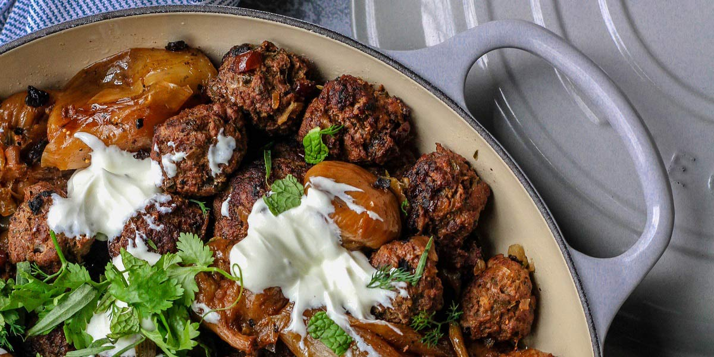

Lamb Meatball Bake
Recipe Specification
Ingredients List
| Ingredients | Quantity |
|---|---|
| Olive Oil | 60ml |
| Tinned Chopped Tomatoes | 1x400g |
| Passata Sauce | 600g |
| Red Wine | 200ml |
| Ground Cinnamon | 2½ tsp |
| Dried Chilli Flakes | 1½ tsp |
| Honey | 60g |
| Fresh Oregano | 20g |
| Parsley | 20g |
| Feta | 200g |
| Pine Nuts | 25g |
| Lamb Mince | 600g |
| Red Onion | 1x1 |
| Garlic Cloves | 3 Cloves |
| Greek Yoghurt | 75g |
| Slice White Bread | 1 Slice |
| Dried Oregano | 15g |
| Salt & Pepper | To Season |
Yield: 4-6 portions
Preparation
- Peel and finely dice red onion.
- Peel and crush garlic cloves.
- Blend sliced bread into bread crumb.
- Combined minced lamb, diced onion, crushed garlic, greek yoghurt breadcrumbs and dried oregano in a bowl thoroughly. Season with a teaspoon of salt and half a teaspoon of black pepper before dividing mixture into 18 equal portions and rolling into smooth meatballs. Use warm water to get a smooth surface around each ball and place on a tray and in the refrigerator for 30 minutes.
- Pick and finely chop oregano leaves.
- Using a hot knife, cut feta into 1cm cubes.
- Pick and finely chop parsley leaves.
- Pre-heat oven to 170’C.
Cooking Instructions
- Place a deep frying pan on a medium/high heat and add olive oil.
- Fry 6 meatball at a time ensuring even browning before transferring to deep baking dish.
- Remove any excess oil in the pan before adding chopped tomatoes and passata sauce. Bring to the boil and reduce to the simmer before adding red wine, cinnamon, chilli flakes, honey and oregano. Cook for 5 minutes and season to taste.
- Pour sauce over meat balls, cover tightly with foil and place in the oven for 1 hour and 30 minutes.
- Remove foil from baking dish, add feta, parsley and pine nuts before turning up the heat to 190’C and cooking for 15 minutes.

Serving Suggestions
Serve meatballs with cous cous and roasted mediterranean vegetables.
Storing instructions
Allow meatballs to cool to room temperature before putting in an air-tight container and placing in the refrigerator. Consume within 4 days of making it
Reheating Instructions
Place in the microwave for 2-3 minutes until piping hot.